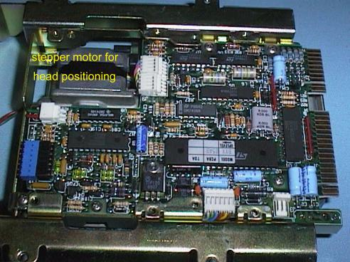
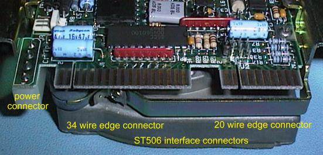
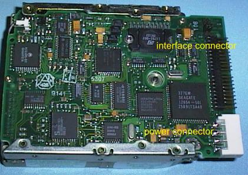
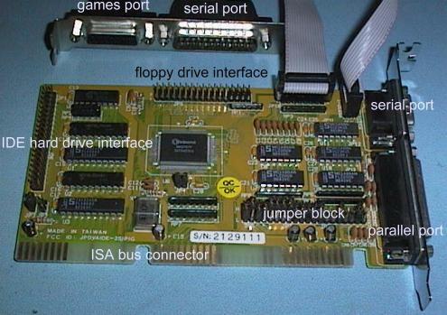

Phil Storrs PC Hardware book
High capacity storage devices
Hard Drive hardware
Four types of hard drive interface have been used with PC computers, first there was the ST506 Interface. This interface used to be called the ST412 interface but this name was soon dropped in favour of ST506. These names were the result of using the names of the first commonly used compact Hard Drives.
ST506 Intervae Hard Drives



The cables used to connect the Interface card to the drive was a single 34 wire cable that was daisy chained from one drive to the next, and a 20 wire cable for each drive. These cables usually had edge connectors on the Drive end.
Another early Hard Drive Interface called ESDI, also used the same cable configuration as the ST506 Interface. It is not possible to tell the difference between ST506 and ESDI hardware by sight.
The IDE Hard Drive Interface
The third Hard Drive Interface used with PC hardware was given the name, Inbuilt Drive Electronics (IDE). This interface was first used on the last 286 based (AT) machines. This Interface uses a 40 wire cable with header connectors on the drive end.


The IDE Interface has undergone great changes and today the Enhanced IDE standards provide an interface that is very fast is used with CDROM Drives, Tape Backup Drives and High Capacity Removable Media Drives. EIDE uses the same 40 wire cable configuration as the original IDE Interface.
Last but not least, there is the SCSI interface, pronounced SCUZZI. This interface has been used where very fast performance, or very large drive size, is important. Today advances to the IDE specification (Enhanced IDE) has meant SCSI is not as important as it once was for performance and drive size. The SCSI interface is not specifically a hard drive interface, it is a universal interface, and can used for connecting tape back-up drives, some CDROM drives and some Optical Scanner devices, to PC computers. It is also often used to connect High Capacity Removable Media Disk drives.
Hard Drive Interface cards
PC/XT Hard Drive Interface cards
The PC/XT type computer used an ST506 hard drive interface to connect the Hard Drive to the computers bus. Here is a PC/XT ST506 Hard Drive Interface card. This interface required two cables between the interface card and the Hard Drive. The 34 wire cable was "daisy chained" if two drives were fitted, and each drive required its own 20 wire cable.


286 (AT) Hard Drive Interface cards
The first PC/AT type computers used the ST506 Hard Drive Interface, here is an ISA bus ST506 Interface card. This card also provides a Floppy Drive Interface.

386/486 Hard Drive Interface cards
The IDE Interface was first built on a simple card with a Floppy Disk Drive Interface. This interface was far more simple than earlier Hard drive Interfaces. Most of the interface electronics is on the actual hard drive, rather than on the Interface card. This card was usually referred to as an IDE/FDC card or a paddle card.
In this era a typical PC Computer consisted of a System Board, a Video card, an IDE/FDC card, and an SPG card. The SPG card provided Serial, Parallel and Games Ports.
As more and more interfaces were put on a single card, the number of cards in a basic PC computer was reduced to just two. The I/O card and the Video card.
The last generation of ISA bus I/O cards provide, Floppy Drive Interface, IDE Hard Drive Interface, Serial Ports (usually two), Parallel Port and a Games Port. These cards were often called, SPG/IDE/FDC cards. Unlike the PC and PC/XT, the I/O cards used in AT and later PC type computers, do not have a Real Time Clock, because this function is built into the System Board.

The last generation of 486 System Boards and Pentium System Boards have the basic I/O functions and the Hard Drive and Floppy Drive Interfaces built on the System Board.
CDROM hardware
Today most PC computers are fitted with a CDROM Drive and a Sound card. Here are some photos of typical modern CDROM drive hardware.

Early CDROM drives used either the SCSI Interface or one of four Proprietary Interfaces designed by various manufacturers. Today the Enhanced IDE Interface is the industry standard for CDROM Drives.
Copyright © Phil. Storr, last updated 26th December 1998